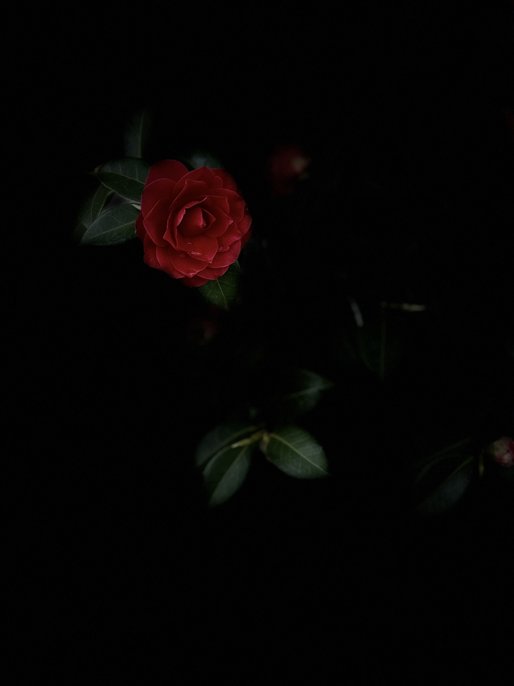
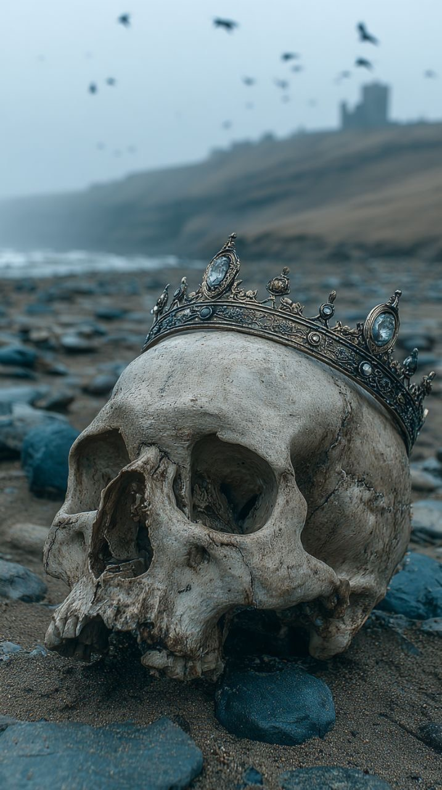
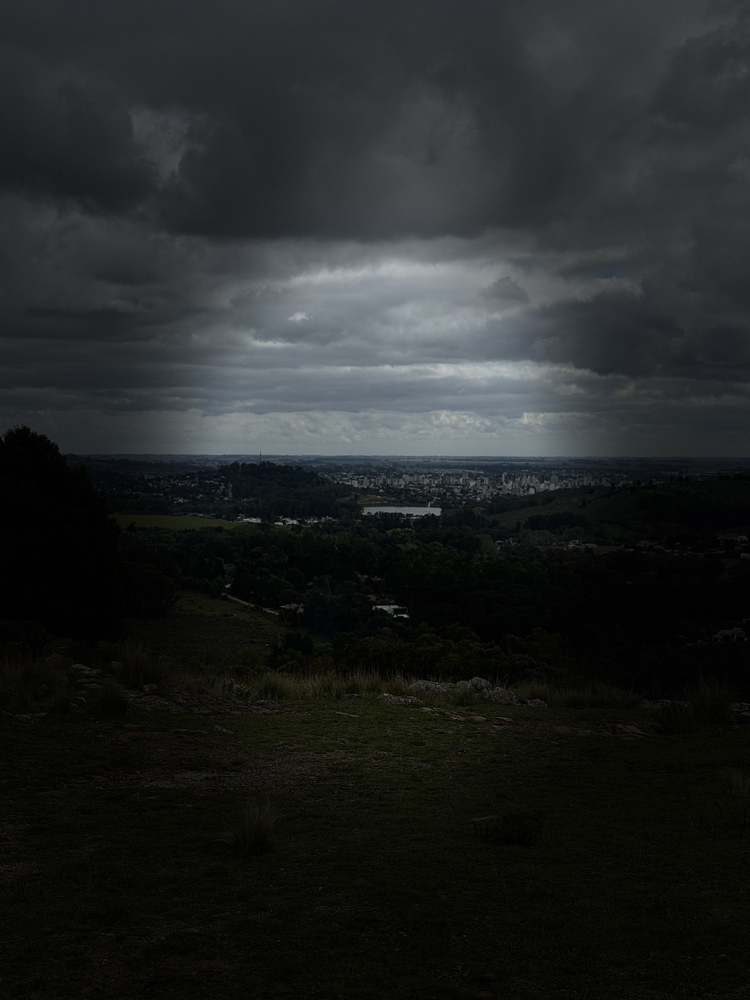
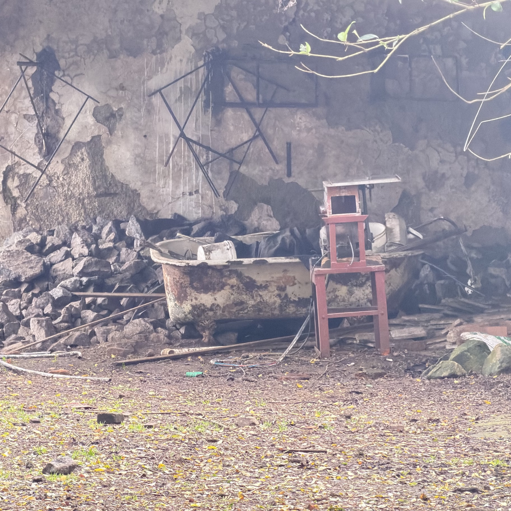
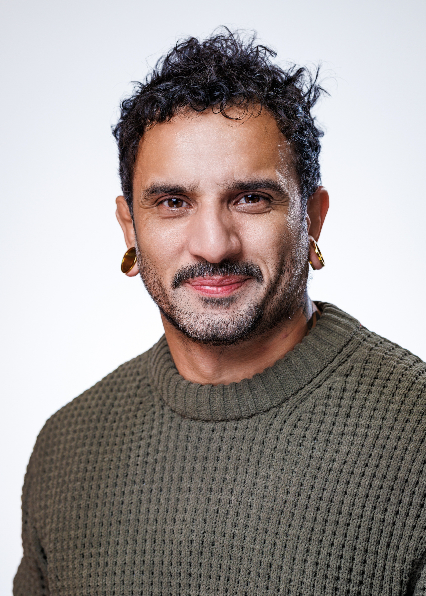

«No puedo temer más que de mí mismo» «I can fear nothing more than myself»
Vi a los cerdos escupir toda su sangre en la piel de esos furiosos animales. Sus venas sobresalían como la peor verdad en la que se encontraban sumergidos. Como impacientes se sacudían de un lado a otro, sombríos, perfumados por la pasividad de tal crimen.
En la habitación, un vacío sumamente perforador, solo con un agujero en la pared, algo de agua y calor. La luz era la que me permitía brillar por las mañanas, en realidad ya había creado mis propias horas, no se bien de que sol se trataba.
Soy libre? — dude.
— Te sangran las rodillas, escuchas que el padre regresara? — pregunto.
— La moda llega con retraso a estos lugares — dije.
La pureza del nuevo lugar donde se encontraba mi cuerpo era hermosa. Como en el mismísimo descenso a los cielos. Mi hombro chorreaba sangre y mis muñecas estaban desangradas. El suelo y las paredes eran blancos, estaba acostado en el piso sin poder moverme. Fije la mirada a uno de ellos, quería decir que me ayudaran, pero nada salió de mi, solo se profundizó mi respiro.
— Las puertas se construyen, el que hizo este cuarto por ahí quería atraparte, atrapar al ezquizo — ahora me apuntaba con el arma.
— Mira, vos me trajiste acá, no se que es… no se donde está la puerta, solo se que soy todo eso que no sabe que hacer…
I saw the pigs spit all their blood on the skin of those furious animals. Their veins protruded like the worst truth in which they were submerged. Impatiently they shook from side to side, somber, perfumed by the passivity of such a crime.
In the room, an excruciatingly piercing emptiness, just a hole in the wall, some water and heat. The light was what allowed me to shine in the mornings — in truth I had already created my own hours, I'm not sure which sun it was.
Am I free? — I doubted.
— Your knees are bleeding, do you hear that the father will return? — he asked.
— Fashion arrives late to these places — I said.
The purity of the new place where my body lay was beautiful. Like the very descent into heaven. My shoulder was dripping blood and my wrists were drained. The floor and walls were white, I was lying on the ground unable to move. I fixed my gaze on one of them, wanting to say help me, but nothing came out — only my breathing deepened.
— Doors are built. Whoever made this room maybe wanted to trap you, to trap the schizo — now he was pointing the gun at me.
— Look, you brought me here, I don't know what this is… I don't know where the door is, I only know I'm everything that doesn't know what to do…
Los ejes de la ansiedad siempre se establecen en orden a cosas que no nos atrevemos a sacar, motores éticamente positivos y muchos negativos. Pero podemos usarla siempre como cargador y aprender a manipularla.
Alguna vez imaginaste la luz lejana pero que estirando la mano podes taparla? Esos sueños que sacrificas comprometen tu satisfacción, tu mano ya no puede hacer sombra. Entonces vas por otro objetivo definitivo, pero que muta.
The axes of anxiety are always established around things we dare not extract — ethically positive motors and many negative ones. But we can always use it as a charger and learn to manipulate it.
Have you ever imagined the distant light that you could cover just by stretching your hand? Those dreams you sacrifice compromise your satisfaction — your hand can no longer cast a shadow. So you go after another definitive goal, but one that mutates.
Ser el que se levanta, el que camina por fuera de todos, es ser rico. Podrás dar ese paso? Eso es el nacimiento de una manada salvaje. Determinar que no necesitamos nada más y que la prosperidad está en la integridad de la libertad.
To be the one who rises, the one who walks outside of everyone, is to be rich. Can you take that step? That is the birth of a wild pack. To determine that we need nothing more and that prosperity lies in the integrity of freedom.

«Los miedos son la muerte de la rebelión» «Fears are the death of rebellion»
Anda hambriento nativo de sueños de amor, pronuncia tus últimas palabras — pronunció aquel de túnicas amplias, acariciando sus manos.
Respire profundo y hable… Es tiempo de que los aportes dementes de los cerdos impacientes, decaigan y que estos como los mediocres, deriven ansiosos en su propia miseria. Es hora de que las provisiones de defensa subsumen en peligro su propia naturaleza de represión.
A eso es lo que el hombre debe realizar su autodestrucción, lo demás es masturbación.
Go, hungry native of dreams of love, speak your last words — pronounced the one in wide tunics, caressing his hands.
I breathed deeply and spoke… It is time for the demented contributions of the impatient pigs to decay, and for them, like the mediocre, to drift anxiously in their own misery. It is time for the provisions of defense to subsume their own nature of repression into danger.
That is what man must do — his own self-destruction. Everything else is masturbation.

«Todo es caos y como tal no se subsume
a otra cosa que no sea su propia naturaleza, el todo» «Everything is chaos and as such does not subsume
to anything other than its own nature, the whole»

¿Qué miran?
¿Hay un horizonte sin límites que los entretiene en instantes que no terminan en agujas?
Los veo, algunos con sus cigarrillos frente a la ventana, u otros solas sin que se les muevan más que los párpados. Tal vez un suspiro irrumpe corto, un sorbo a su café o a su mate si no hay ventana de por medio, solo la vereda y una silla antigua de metal.
Es un horizonte análogo, pero de pensamientos que logran capacidades inalcanzables en la inmediatez actual, que por momentos transmuta mirada, pero sin comentarios, sin decir nada.
¿Es un horizonte? ¿Lo fue siempre?
Hay alguno que no llevan ni un sorbo, ven cómo el aire entrama rarezas, pero que desmembran el tiempo, lo desfragmentan, lo reinterpretan, pero jamás lo conceptualizan.
¿Es una espera?
Enfrentados en diagonales, estaban aquellos dos cafés, uno sobre una esquina antigua, desganada, con humedades y maderas que crujen para avisarnos que siguen ahí. Mesas que no siguen patrones geométricos, ni mucho menos estabilidades. El otro, algo más actual, pegado a un edificio hecho para oficinas, pero que solo 1 o 2 pisos tienen movimiento alguno. Este último tiene más pastelería, pero de esa que viene en bolsas para que quede clara la porción. En ambos, sujetos solitarios se sientan tardes enteras, a ver esos estremecedores pasares modernos, pero sin seguirles la vista, sin mover la cabeza. No hay celulares en aquellos habitantes de los instantes perpetuos, no hay más imágenes que el devenir.
Se les dice que tienen la mirada perdida, ¿pero si quienes la tienen realmente somos nosotros?
Mirar verticalidades no es contar pisos de aquellas oficinas, es más ir llenando el carrito de deseos y golosinas.
Algo hermoso, si lo hay, es que el primero no vende café para llevar. Tenes un pebete, pero todas sus botellas son de vidrio, imposibles de take away, así como el resto de las cosas que tenga destino el paladar. El otro claramente no, tiene todo para la inmediatez, hasta 2 cajas para pagar. Pero rompiendo con esa velocidad, con barba de 2 semanas, borcegos con barro, camisa de jean, pucho en boca, está él, de unos 60 años. Nunca mueve sus manos más que para levantar su té o bien llevar su cigarrillo armado a la boca. Mira siempre al costado de un árbol frente al café, cercano a una gran ventana enrejada, que siempre está cerrada. Su silla en un ángulo de 90 grados, su té cercano a la mano izquierda y el cigarrillo posa a la espera en un cenicero muy colorido. (Lo llamativo es que siempre parece ser el mismo; vi diversos sobre las mesas, pero este, este siempre es el mismo).
¿Será ese árbol testigo de afecciones? ¿O más bien aquella ventana cerrada? No hay otros gestos, no hay suspiros, es ese mirar que solo resetea en pestañeos, que profundiza en especulaciones, dudas, miedos y felicidad. Ponderan afecciones que hacen de los segundos vientos veloces, donde la hoy amada métrica se queda putrefacta, sin siquiera tomar una sola medida.
Hay un solo momento que lo cambia todo, cuando entre las pequeñas rendijas de la persiana se ve que se prende una luz. Ahí apaga su cigarrillo sin importar cuánto le quedaba por seguir transformándose en ceniza y calor. Algo se transforma en aquellas afecciones, algo se modifica sin haber suspiro, sin haber otro movimiento más.
La precisión de esa escena no deja de sorprenderme, la espero, la observo también batallando el absurdo.
Sin irse, toma sus manos, se las acaricia y deja que aquel santiamén sea su eternidad. No hay un tiempo exacto, solo un lugar común más: al sacar su saco de té de la taza, le traen la cuenta. Todos los del lugar parecen estar atentos a aquel acto, porque su reacción siempre es inmediata.
En la otra esquina hay una mujer de pelo ondulado, que no debe llegar a los 50, con un tazón enorme de café. En ese café no tienen estas tazas para otros clientes, pero sí para ella. Ese tazón no parecía tener límites, así como sus dedos largos y ojos profundos.
Se sienta en una mesa que tiene un tablón de roble con dos vértices tallados con flores. Una mesa para al menos 4 personas, pero que nadie se anima a territorializar más que ella. Su mirada tiene dos destinos no finitos: la ventana izquierda, que da a una mueblería chica de barrio, y el otro a la ventana de centro izquierda, más cerca de la puerta, que apunta a un mural que dibuja la vida de una semilla. Esta comienza viajando en los vientos humeantes de fábricas, cayendo en los suelos de una batalla armada entre quienes parecieran ser los mismos trabajadores. Luego esa semilla es arrastrada por un topo, que llenándola de baba, le da al menos una gota de líquido. Enterrada entre pisotones de lo que pareciera unos zapatos bien lustrados, encontró tierra fértil. La planta toma vida en ese mural, sacando unas flores muy coloridas, unos movimientos hermosos, se va fortaleciendo entre esos campos e identidades que de a poco comercializan sus deseos de expansión, quedando entre veredas y cemento. Su fuerza rompe las veredas, de sombras frescas en los veranos mercantiles. En esa hermosa pintura, pareciera que resiste, pero cuando seguís con la mirada, vendando entre cintas de moebius, un camión carga su madera con destino a aquellas fábricas humeantes.
¿Es un horizonte? ¿Siempre lo fue?
Cuando termina de recorrerlo entre lo que seguro son muchos devenires, sus manos se apoyan en la mesa. Otra luz se apaga, es la de la mueblería; en ese no instante, ella se levanta. La sincronización es imperfecta, pero la deserción de seguir contemplando es total. Se va.
Una parte de mí siempre quiere acercarse, saber, tal vez sin preguntar, pero sí realmente tener la respuesta. ¿Es siempre perder la pregunta originaria, o sea estar ahí en el retorno del orgasmo precoz?
What are they looking at?
Is there a limitless horizon that entertains them in instants that never end in clock hands?
I see them — some with their cigarettes facing the window, others alone with nothing moving but their eyelids. Perhaps a short sigh breaks through, a sip of their coffee, or their mate if there is no window in between, only the sidewalk and an old metal chair.
It is an analog horizon, but one of thoughts that reach capacities unattainable in today's immediacy — a horizon that at moments transmutes the gaze, yet without comments, without saying anything.
Is it a horizon? Was it always one?
There are some who don't even take a sip; they watch how the air weaves oddities, oddities that dismember time, defragment it, reinterpret it, but never conceptualize it.
Is it a wait?
Set diagonally against each other stood those two cafés: one on an old corner, listless, with damp patches and creaking wood that warns us it is still there. Tables that follow no geometric pattern, much less any stability. The other, somewhat more modern, attached to a building made for offices, though only one or two floors show any movement at all. This latter one has more pastries, but the kind that comes in bags so the portion is made clear. In both, solitary figures sit through entire afternoons, watching those startling modern passersby, but without following them with their eyes, without turning their heads. There are no cellphones among those inhabitants of perpetual instants; there are no images other than becoming.
They are said to have a lost gaze — but what if the ones who truly have it are us?
To look at verticalities is not to count the floors of those offices; it is more like filling the cart with desires and sweets.
Something beautiful, if there is any, is that the first one doesn't sell coffee to go. You can get a sandwich, but all its bottles are glass, impossible to take away, just like everything else destined for the palate. The other, clearly not: it has everything for immediacy, even two registers to pay at. But breaking with that speed — with a two-week beard, muddy boots, a denim shirt, a cigarette in his mouth — there he is, about sixty years old. He never moves his hands except to lift his tea or bring his hand-rolled cigarette to his lips. He always looks to the side of a tree in front of the café, near a large barred window that is always shut. His chair at a ninety-degree angle, his tea near his left hand, and the cigarette waiting in a very colorful ashtray. (What is striking is that he always seems to be the same one; I have seen various people at the tables, but this one, this one is always the same.)
Would that tree be a witness to afflictions? Or rather that shut window? There are no other gestures, no sighs; it is that gaze that only resets in blinks, that deepens into speculations, doubts, fears, and happiness. They ponder afflictions that turn seconds into swift winds, where today's beloved metric rots away without ever taking a single measurement.
There is a single moment that changes everything: when, through the small slits of the blind, a light is seen to turn on. That is when he puts out his cigarette, no matter how much of it was left to keep turning into ash and heat. Something transforms in those afflictions, something shifts with no sigh, with no other movement at all.
The precision of that scene never ceases to amaze me; I wait for it, I observe it too, battling the absurd.
Without leaving, he takes his own hands, caresses them, and lets that split-second be his eternity. There is no exact time, only one more common place: as he lifts his tea bag out of the cup, they bring him the check. Everyone in the place seems attentive to that act, because his reaction is always immediate.
On the other corner there is a woman with wavy hair, who can't be fifty yet, with an enormous bowl of coffee. In that café they don't have these bowls for other customers, but they do for her. That bowl seemed to have no limits, just like her long fingers and deep eyes.
She sits at a table with an oak plank, two of its corners carved with flowers. A table for at least four people, but that no one dares to territorialize except her. Her gaze has two non-finite destinations: the left window, which looks onto a small neighborhood furniture shop, and the other, the center-left window, closer to the door, pointing to a mural that depicts the life of a seed. It begins traveling on the smoking winds of factories, falling onto the soil of an armed battle between what appear to be the workers themselves. Then that seed is dragged along by a mole, which, coating it in slobber, gives it at least a drop of liquid. Buried beneath the stomping of what look like well-polished shoes, it found fertile soil. The plant comes to life in that mural, putting out very colorful flowers, beautiful movements; it grows stronger among those fields and identities that little by little commercialize their desires for expansion, left between sidewalks and cement. Its force breaks the pavement, casting fresh shadows over the mercantile summers. In that beautiful painting, it seems to resist — but when you follow it with your eyes, bandaging itself through Möbius strips, a truck loads its wood bound for those smoking factories.
Is it a horizon? Was it always?
When she finishes traversing it, among what are surely many becomings, her hands rest on the table. Another light goes out — that of the furniture shop; in that non-instant, she rises. The synchronization is imperfect, but the desertion from going on contemplating is total. She leaves.
A part of me always wants to draw closer, to know, perhaps without asking, yet to truly have the answer. Is that always to lose the original question — that is, to be there in the return of the premature orgasm?

Escritor, poeta y ensayista argentino. Su obra explora los territorios donde la filosofía, la poesía y la ficción se funden — espacios de fuego, manadas salvajes, ángeles hambrientos y descensos a cielos que son más bien abismos.
Influenciado por el pensamiento de Deleuze, Guattari y Nietzsche, sus textos confrontan la moral, el capital y las instituciones con una escritura visceral que busca la velocidad del deseo y la potencia de lo salvaje.
Su obra — aún inédita — abarca novela, ensayo filosófico y una vasta colección poética donde el amor, la rebeldía y la naturaleza son fuerzas indistinguibles.
Argentine writer, poet, and essayist. His work explores the territories where philosophy, poetry, and fiction merge — spaces of fire, wild packs, hungry angels, and descents into heavens that are more like abysses.
Influenced by the thought of Deleuze, Guattari, and Nietzsche, his texts confront morality, capital, and institutions with a visceral writing that seeks the velocity of desire and the power of the wild.
His work — yet unpublished — spans novels, philosophical essays, and a vast poetic collection where love, rebellion, and nature are indistinguishable forces.